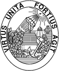

Universidade do Porto
Faculdade de Engenharia
Licenciatura em Engenharia Electrotécnica e de Computadores
Projecto, Seminário ou Trabalho Final de Curso
Jornadas de Apresentação Pública dos Trabalhos Realizados em 1999-2000
Automação, Produção e Electrónica Industrial
Rua dos Bragas P - 4050-123 Porto
Tel +351-2-2041819 URL: http://www.fe.up.pt/~fjr/PSTFC/